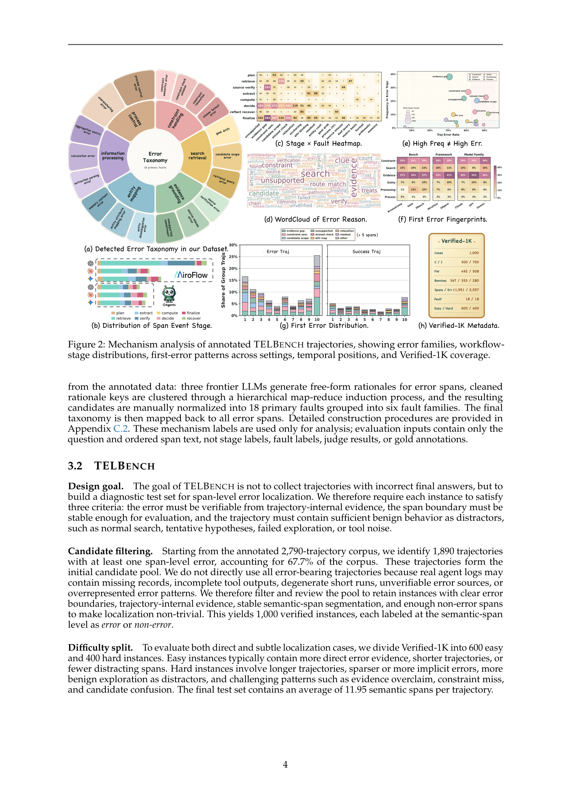
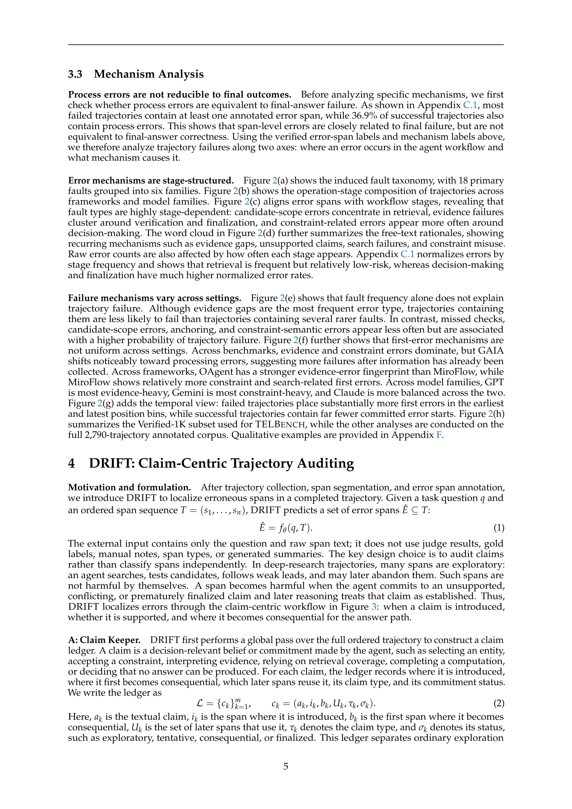

한눈에 보기
딥 리서치 에이전트(Deep-Research Agent)의 신뢰성을 최종 답변이 맞았는지로만 평가하는 것은 충분하지 않습니다. 이 논문은 궤적 내 어떤 구간(스팬)에서 오류가 처음 발생했는지를 국소화하는 새로운 벤치마크 TELBench와, 주장(Claim) 중심 감사 프레임워크 DRIFT를 제안합니다.
- 논문: Where Do Deep-Research Agents Go Wrong? Span-Level Error Localization in Agent Trajectories (arXiv:2606.02060)
- 소속: NJU-LINK Lab 외
- 키워드: 딥 리서치 에이전트, 궤적 오류 국소화, TELBench, DRIFT, 멀티 에이전트 감사
문제의식: 최종 답변 평가의 한계
딥 리서치 에이전트는 복잡한 질문에 대해 검색·추출·검증·비교·종합의 긴 추론 궤적을 만듭니다. 기존 평가는 주로 “최종 답변이 맞았는가?”에 집중하지만, 실제로는 중간에 지지되지 않은 주장이나 잘못된 후보 선택이 이후 단계에 전파되어 결과를 오염시키는 경우가 많습니다.
“유해한 스텝은 대개 보이는 최종 오답이 아니라, 이후 스팬들이 재검증 없이 상속하는 **초기의 약한 헌신(commitment)**이다.”
TELBench: 궤적 오류 국소화 벤치마크
구축 과정
- 궤적 수집: GAIA, XBench, BrowseComp 3개 벤치마크, 465개 태스크
- 모델·프레임워크 다변화: GPT-5, Gemini-2.5-Pro, Claude-Sonnet-4.5 × MiroFlow, OAgent → 2,790개 궤적
- 의미적 스팬 분할: 원시 로그를 검색·검증·추출·의사결정 등 의미 단위로 분할
- 전문가 어노테이션: 7명 전문가가 300시간+ 이상 궤적을 읽고 오류/비오류 스팬 라벨링
- 최종 1,000개 검증 인스턴스 (easy 600 + hard 400)
오류 분류 체계 (Taxonomy)
논문은 18개 주요 오류 유형을 6개 패밀리로 정리합니다:
| 오류 패밀리 | 주요 오류 유형 |
|---|---|
| 제약 처리 | 제약 의미 오류, 제약 검사 누락, 제약 완화 |
| 검색·검색 | 목표 표류, 후보 범위 오류, 검색 쿼리 오류 |
| 증거 근거화 | 출처 검증 오류, 출처 오용, 지지 없는 헌신 |
| 엔티티 매핑 | 엔티티 모호성, 속성 매핑 오류, 메모리 컨텍스트 오류 |
| 정보 처리 | 추출 파싱 오류, 계산 오류, 집계 지표 오류 |
| 프로세스 제어 | 과고정 오류, 프로세스 제어 오류 |

DRIFT: 주장 중심 궤적 감사 프레임워크
DRIFT(Dependent-Reasoning Inspection & Fact-checking Tracing)는 궤적을 주장(Claim) 단위로 추적하고 감사합니다.
핵심 구성요소
-
Claim Keeper (주장 관리자): 전체 궤적을 읽고 주장 원장(Claim Ledger)을 구축합니다. 각 주장이 언제 도입되었고, 언제 결정적으로 사용되었는지, 이후 어떤 스팬이 의존하는지를 기록합니다.
-
Support Seeker (지원 검색자): 각 주장이 궤적 내 증거에 의해 직접 지원 / 약한 지원 / 지원 누락 / 충돌 중 어느 상태인지 판정합니다.
-
Specialist Auditors (전문 감사관): 엔티티, 제약, 증거, 검색, 계산, 프로세스 등 유형별 전문 검사를 수행합니다.
-
Dependency Tracer (의존성 추적자): 지지되지 않거나 충돌하는 주장을 역추적하여 오류 스팬과 비오류 스팬을 최종 분리합니다.

핵심 결과
DRIFT가 기존 방법을 압도
| 모델 | 방법 | Easy F1 | Hard F1 | Overall F1 |
|---|---|---|---|---|
| DeepSeek-V3.2 | Bare | 25.89 | 17.31 | 22.46 |
| DeepSeek-V3.2 | DRIFT | 57.81 | 39.57 | 50.51 |
| GPT-5.4 | Bare | 36.12 | 30.66 | 33.93 |
| GPT-5.4 | DRIFT | 58.45 | 43.51 | 52.48 |
| Claude-Sonnet-4.6 | Bare | 24.01 | 18.71 | 21.89 |
| Claude-Sonnet-4.6 | DRIFT | 60.00 | 47.28 | 54.91 |
| Gemini-2.5-Pro | Bare | 33.39 | 27.44 | 31.01 |
| Gemini-2.5-Pro | DRIFT | 52.94 | 41.62 | 48.41 |
모든 백본 모델에서 DRIFT가 Bare LLM, Codex, Claude Code 대비 F1 점수를 크게 향상시킵니다. 특히 Claude-Sonnet-4.6 기반 DRIFT가 Overall F1 54.91로 최고 성능을 보입니다.
주요 발견
- 단순 스케일업으로는 불충분: 더 큰 모델이 일관되게 더 나은 진단을 보이지 않음
- 첫 오류 국소화는 여전히 어려움: F1은 크게 향상되었으나 First-Error Accuracy는 낮은 수준
- 의사결정·종료 단계가 가장 위험: 정규화 오류율이 의사결정 60.5%, 종료 51.8%로 검색 단계(2.9%)와 큰 대조
- 성공 궤적에도 36.9%가 오류 스팬 포함: 에이전트가 중간 오류에서 회복하는 경우가 많음
의의와 시사점
-
과정 수준 평가의 필요성: 최종 답변 평가만으로는 에이전트 신뢰성을 충분히 진단할 수 없습니다. TELBench는 “어디서 틀렸는가”를 묻는 새로운 평가 패러다임을 제시합니다.
-
주장 중심 설계의 효과: DRIFT의 주장 원장 → 지원 검사 → 의존성 추적 파이프라인은 길고 노이즈가 많은 궤적에서도 구조적으로 오류를 찾아냅니다.
-
에이전트 신뢰성 향상의 방향: 에이전트 자체가 DRIFT와 같은 감사 구조를 내장하면, 궤적 내 약한 헌신을 조기에 발견하고 수정하는 자기 개선이 가능해질 수 있습니다.
참고
- 논문: arXiv:2606.02060
- HuggingFace: 논문 페이지
- 소속: Nanjing University NJU-LINK Lab